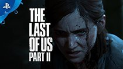

- 
The Legend of Zelda: Breath of the Wild là trò chơi thuộc thể loại RPG thế giới mở được phát triển và phát hành bởi Nintendo. Trò chơi là một phần của series game huyền thoại The Legend of Zelda, được phát hành trên hệ máy Nintendo Switch và Wii U vào ngày 3 tháng 3 năm 2017
Cốt truyện game kể về cuộc phiêu lưu của Link, một chàng hiệp sĩ được phong tước bởi công chúa Zelda. Sau khi thất thủ trước sự tấn công của thế lực quỷ ác Ganon, Link và công chúa Zelda đã phải chạy trốn. Quyết không để đánh mất đi niềm hi vọng cuối cùng của thế giới, công chúa đã phong ấn cây kiếm Master Word và cả Ganon bằng tất cả sức mạnh của mình và hy sinh. Link tỉnh dậy sau hơn 100 năm, anh không còn nhớ được gì về những câu chuyện quá khứ. Nhưng với sự dẫn dắt của một giọng nói kì lạ, anh đã tìm lại được vị vua cuối cùng của vương quốc Hyrule và được ông gợi nhớ lại nhiệm vụ của mình: đánh bại Ganon trước khi hắn phá bỏ phong ấn và hủy diệt thế giới.
God of War cũng là một tựa game nhập vai thế giới mở do Santa Monica Studio phát triển và phát hành bởi Sony Interactive Entertainment (SIE).
Cốt truyện game kể về hành trình của 2 cha con thực hiện lời hứa với người phụ nữ mà họ yêu thương nhất Faye: sau khi bà mất, tro cốt của bà phải được rải ở nơi cao nhất trong chín cõi. Xuyên suốt cuộc hành trình, Kratos và con trai Atreus sẽ không chỉ gặp muôn vàn thử thách từ thiên nhiên mà còn phải chống chọi với vô số quái vật hung bạo.
Sekiro: Shadow Die Twice là cái tên được xướng lên tại lễ trao giải 2019. Game thuộc thể loại hành động nhập vai phiêu lưu được phát triển bởi FromSoftware và được Activision phát hành trên nhiều nền tảng gồm Microsoft Windows, PlayStation 4 và Xbox One.
Cốt truyện game diễn ra trong một thời Chiến Quốc tưởng tượng vào cuối thế kỷ 16 ở Nhật. Người chơi vào vai Sekiro, một ninja bị bỏ mặc cho đến chết sau khi bị một samurai hàng đầu của tộc Ashina, Genichiro chặt đứt một cánh tay và bắt cóc chủ nhân của mình là Kuro để xây dựng một đạo quân bất tử. Khi thức dậy, Sekiro thấy cánh tay bị mất của mình đã được thay bằng một bộ phận giả bởi một nhà điêu khắc bí ẩn và anh bắt đầu hành trình giải cứu cho chủ nhân của mình từ đây.
Giải thưởng Game of the Year của The Last of Us II có lẽ là một trong những giải thưởng gây tranh cãi nhiều nhất trong cộng đồng game thủ. Nguyên nhân là bởi tựa game của Naughty Dog dù sở hữu đồ họa xuất sắc và gameplay chân thật nhưng cốt truyện lại có quá nhiều pha “quay xe”, đến cả phần ending cũng khiến game thủ cảm thấy chưng hửng, thậm chí nhiều người cho rằng là khá lãng xẹt. Nhưng cụ thể thế nào thì Sforum sẽ để bạn tự tìm hiểu nhé.
Game viết tiếp cuộc hành trình của 2 cha con Ellie và Joel sau những sự kiện đã diễn ra ở phần I. Bối cảnh game được bắt đầu tại thị trấn Jackson County thuộc tiểu bang Wyoming, do hai vợ chồng Tommy điều hành. Trong game, bạn sẽ không chỉ điều khiển Ellie mà còn cả Abby, một thành viên nữ của WLF. Thông qua cốt truyện, bạn sẽ hiểu được câu chuyện đằng sau 2 nữ chính cũng như hiểu thêm mối thâm thù giữa họ. Theo trải nghiệm của ad thì The Last of Us II có vẻ như là một tựa game đề cao tính nữ quyền khi mà toàn bộ nhân vật nam của game đều sẽ có một kết thúc bi thảm.
Tạm Kết
Vậy là chúng ta đã điểm danh xong 4 cái tên xuất sắc nhất trong 4 năm liên tiếp của giải thưởng Game of the Year. Theo bạn đâu là cái tên để lại nhiều ấn tượng nhất? Hãy chia sẻ quan điểm ở phần comment nhé. Xin chào và hẹn gặp lại!
SDT: 0987229560
FB: https://www.facebook.com/anhvu.tran.10441/